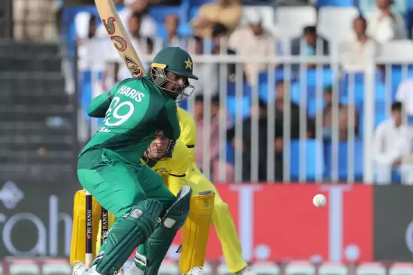

Led by Haris Sohail's 101*, Pakistan powered to 280 for 5 in their allotted 50 overs in the first ODI on Friday (March 22) after electing to bat first on a slowish Sharjah wicket. Cock-a-hoop after their victorious campaign in India, Australia started off on a disciplined note on a sluggish wicket. Debutant Shan Masood and Imam-ul-Haq remained dour in their approach. But the introduction of spinners from both ends spelt success for Australia as they got rid of Imam through Lyon.
Hello and welcome to the second T20I between South Africa and Sri Lanka. The visitors struggled to chase down a low target but the fact that they kept a full-strength South African side in check before going down in the Super Over should give them a boost. South Africa will be without several of their main players but can still make a good XI. Can Sri Lanka have it any better at Centurion? Let's wait and watch. We will be bringing you the live updates from the match. You can join in as well with your views and questions. Write on the comments section below or tweet to us.